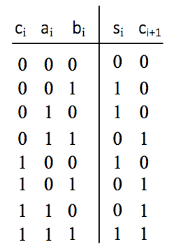
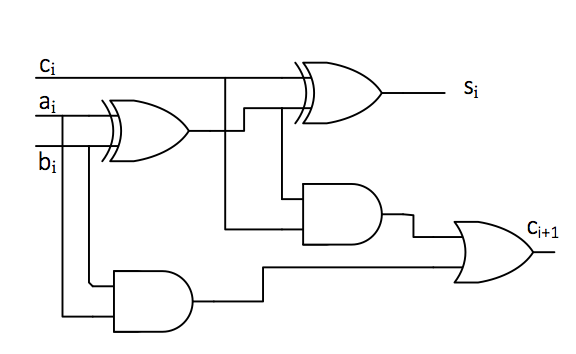
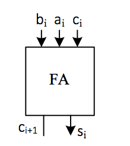
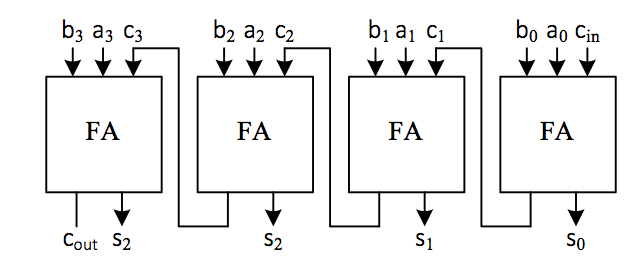
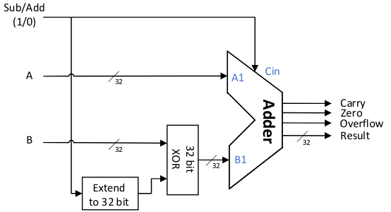

Lab 3: Adders and ALUs
“Six by nine. Forty-two.”
“That’s it. That’s all there is.”
“I always thought something was fundamentally wrong with the universe.”
— “The Restaurant at the End of the Universe”， Douglas Adams
Addition is the most frequently performed operation in digital systems, and the adder is the core component of the ALU (Arithmetic-Logic Unit). Subtraction can be viewed as the addition of the minuend and the negative of the subtrahend. That is, the adder can perform both addition and subtraction operations simultaneously. Multiplication can also be implemented using the shift-and-add algorithm. Therefore, the adder can be considered the busiest component in a computer.
The purpose of this lab is to review the principles of adders and learn how to design simple ALUs.
Adders
Multiple adders can be cascaded from single-bit adders. Figure adder01 is a full adder truth table with inputs \(a_i\), \(b_i\), and \(c_i\) (two addends and a carry bit).
The output is \(s_i\) and \(c_{i+1}\) (the result and the next carry digit); Figure adder02 is a one-bit adder circuit diagram, and Figure adder04 is a four-bit ripple carry adder block diagram.
Its inputs are \(a\) ( \(a_0-a_3\) ), \(b\) ( \(b_0-b_3\) ), and \(c_{in}\) , and its outputs are \(s\) ( \(s_0-s_3\) ) and \(c_{out}\).
 Fig. 17 One-bit full adder truth table |
 Fig. 18 One-bit full adder circuit diagram |
 Fig. 19 One-bit full adder block diagram |
 Fig. 20 Four-bit serial full adder |
The design of a full adder is relatively simple. Please refer to the circuit diagram and think about how to design a serial carry adder circuit. Serial adders are very slow because the carry must be propagated from the least significant bit to the most significant bit. To build a faster adder, additional logic must be used to calculate the carry information in advance. This is the design concept behind the carry-lookahead adder. There are several commonly used algorithms for lookahead addition. Interested students can refer to relevant materials for further reading.
Implementation of an 8-bit adder
The design of the above four serial adders would become extremely complex and inefficient if extended to more bits. In Verilog, arithmetic assignment statements and vectors can be used to perform such arithmetic operations. If we define the following vector:
input [n-1:0] in_x, in_y;
output [n-1:0] out_s;
Then arithmetic assignment statement
out_s = in_x + in_y;
allows you to implement an n-bit adder.
Please note that this code defines a circuit that can generate an n-bit adder, but the adder circuit does not include the carry output signal and arithmetic overflow signal generated during the addition process.
The overflow signal is used to determine whether the result of the operation \(out\_s\) is correct. It can be proven that the arithmetic overflow signal for signed two’s complement operations can be obtained using the following expression:
The principle behind this determination is as follows: if the signs of the two variables involved in an addition operation are the same, but the sign of the result differs from theirs, the result is inaccurate and an overflow occurs. Specifically, if two positive numbers are added to yield a negative result, or two negative numbers are added to yield a positive result, an overflow has occurred. Adding one positive number and one negative number will not cause an overflow. Of course, there are other methods for determining overflow, so please refer to relevant materials to learn about other ways to determine whether an operation has caused an overflow.
The carry signal can be obtained using the following expression:
{out_c,out_s} =in_x + in_y;
After this expression is executed, \(out\_c\) is the carry bit, and \(out\_s\) is the result of the addition operation. The carry bit here is solely used to indicate whether there is a carry from the most significant bit of the operand during the addition operation. This concept is opposite to the carry flag (CF) in the X86 architecture during subtraction operations, where \(CF = out_c \oplus cin\), with \(cin\) set to 1 during subtraction. In signed addition and subtraction, the overflow bit is used for overflow detection, while the carry bit is not. In unsigned addition and subtraction, the carry bit is used for overflow detection, while the overflow bit is not.
Design of a simple addition and subtraction arithmetic unit
The above adder can only perform addition operations. If subtraction operations are to be performed, a separate subtraction unit must be designed. In fact, in actual arithmetic units, if the operands involved in the operation are all two’s complement, the adder can be used to perform both addition and subtraction operations simultaneously.

Fig. 21 Simple addition and subtraction ALU
Figure alu0 is a reference logic diagram of a 32-bit adder/subtractor. The input signals include: two 32-bit two’s complement operands A and B participating in the operation, and a Sub/Add control pin that determines whether to perform addition or subtraction. When set to 1, the device performs subtraction. The output signals include: a 32-bit result (Result), a carry bit, an overflow bit, and an output bit indicating whether the result is zero.
The figure shows the process of taking the two’s complement of a subtrahend to convert subtraction into addition. That is, for A – B, we can first calculate the value of (– B), then add it to A, i.e., A – B = A + (–B). For two’s complement, the two’s complement of – B is obtained by inverting all bits of B, including the sign bit, and then adding one.
Please look up the relevant information and design an adder with addition and subtraction functions on your own.
Subtraction Overflow
Although subtraction is also implemented using an adder, subtraction operations require special handling for overflow checks when the subtrahend is the smallest negative number. Consider the following two implementations. Which one is correct?
Implementation 1:
assign t_no_Cin = {n{ Cin }}^B;
assign {Carry,Result} = A + t_no_Cin + Cin;
assign Overflow = (A[n-1] == t_no_Cin[n-1]) && (Result [n-1] != A[n-1]);
Implementation 2:
assign t_add_Cin =( {n{Cin}}^B )+ Cin; // please note the order of the ^ operation and the + operation here
assign { Carry, Result } = A + t_add_Cin;
assign Overflow = (A[n-1] == t_add_Cin[n-1]) && (Result [n-1] != A[n-1]);
Zero output
There are two ways to determine whether the output result is zero. One is to use an if statement to compare Result with 0, which will generate a comparator in the hardware. Another way is to use the following statement:
assign zero = ~(| Result);
|Result The operation is called unary reduction, which can be implemented with several logic gates in hardware. Please refer to the relevant Verilog syntax documentation to understand the operation process of this operation.
Choose the method you think is best to determine whether the result is 0.
Design of Adder Test Values
In this lab’s testing process, there are many operands and the number of bits is relatively long. If we use enumeration to test each value, the test will certainly be very thorough, but the test results will be too long, difficult to read, and not entirely necessary. Therefore, when testing, it is important to select some key, boundary, and typical values. For example, here we are required to design a 4-bit two’s complement adder/subtractor, where both the input and output are in two’s complement format. The range of values for the operands is from -8 to +7. We can assign the following values to the two operands: 7, 6, 2, 1, 0, -1, -2, -7, -8, etc. Observe the simulation results, and then add additional test values as needed.
In the adder test, you can use the task function in the test bench to perform automatic testing. Note: The task function is primarily used for calculating and verifying results during testing and is not recommended for use when implementing circuits.
task check; // test task
input [3:0] results; // the expected correct output of ALU results
input resultof, resultc, resultz; // expected overflow, carry, and zero in ALU
begin
if(outputs!=results) // compare expected results and test unit outputs
begin // display when an error occurs
$display("Error:x=%h,y=%h,ctrl=%b,s should be %h,
get %h", inputa, inputb, inputaluop, results, outputs);
end
// add overflow, carry, and zero comparison yourself
end
endtask
During testing, you can call the check task to determine whether the results are correct.
for(i=-8;i<=7;i=i+1) // it is recommended that i and j be signed numbers with more than 5 digits
for (j=-8;j<=7;j=j+1)
begin
inputa=i;
inputb=j; // set two inputs
inputaluop=4'b0000; // ALU opcode
k = * ; // calculate the correct output yourself and fill in the * field
of= * ; // can be filled out manually depending on the situation
z = * ;
c = * ;
#20 check(k[3:0],of,c,z);
end
ALU design
In a CPU, the ALU’s functions often include not only addition and subtraction operations, but also logical operations, shifts, multiplication and division, comparisons, and so on. Here, we will introduce the ALU design requirements based on the RV32I basic instruction set in RISC-V.
The RISC-V RV32I basic instruction set only supports 32-bit integer operations. Operands can be signed two’s complement integers or unsigned numbers. The ALU does not need to perform multiplication or division, nor does it need to perform overflow checks. These operations are performed by software. The RV32I ALU needs to perform the following operations:
Arithmetic Operations: Perform addition and subtraction operations on signed two’s complement numbers and unsigned numbers without needing to check for overflow or carry. Under these conditions, signed and unsigned numbers can be handled uniformly.
Logical Operations: Perform XOR, AND, and OR operations. Other operations are implemented in software. For example, NOT can be implemented using XOR with a full-one operand.
Shift operations: Perform logical left shift, logical right shift, arithmetic right shift, and other functions. Shift operations will be introduced in the shift register lab later.
Comparison operations: Perform equality and inequality comparisons between signed and unsigned numbers. These operations can be implemented using subtraction.
Equivalence can be determined by the zero output of subtraction.
The comparison of the magnitude of signed numbers can be done by subtraction, i.e., when comparing the magnitudes of two numbers A and B, first take the complement of B and add one, then add it to A. If there is no overflow, the sign bit of the result is 1, meaning A is less than B. If the subtraction overflows, the original signs of A and B must be different. At this point, if the sign bit of the result is 0, it means that A is negative and B is positive. After B is inverted and incremented by one, it becomes negative, and the sum of the two is positive, so A should be less than B. When there is an overflow, if the sign bit of the result is 1, then B is less than or equal to A. Therefore, \(Less_s=out\_s_{n-1}\oplus Overflow\) can be used for judgment. Please analyze the specific reasons yourself.
Unsigned number comparisons can also be determined using subtraction. At this point, if the most significant bit carries, then A is greater than or equal to B; otherwise, A is less than B. In actual circuits, this is often implemented using \(Less_u=cin\oplus Carry\). Please analyze the specific reasons yourself.
Lab check-in contents
On-Board Lab: Implementing a simple ALU with logical operations
Design a 4-bit signed two’s complement ALU that can perform the following operations:
opcode |
function |
operation |
|---|---|---|
000 |
addition |
A+B |
001 |
subtraction |
A-B |
010 |
negation |
Not A |
011 |
and |
A and B |
100 |
or |
A or B |
101 |
xor |
A xor B |
110 |
comparison |
If A<B then out=1; else out=0; |
111 |
test equivalence |
If A==B then out=1; else out=0; |
When performing addition and subtraction operations, the ALU needs to be able to determine whether the result is 0, whether there is an overflow, whether there is a carry, etc. Here, the input operands A and B are already in two’s complement form. Compare sizes using signed numbers.
When performing logical operations, overflow and carry do not need to be considered.
Since the number of inputs on the development board is limited, SW can be used as data input and button as the selection port.
Online test
4-bit two’s complement adder/subtractor
Simple 4-bit ALU
Carry in subtraction
There is a universally accepted definition for the carry bit in addition, but there are two completely different definitions for the carry mechanism in subtraction. For more details, please refer to Carry flag. In the X86 processor introduced in the ICS course, the carry in subtraction is implemented using the borrow method.